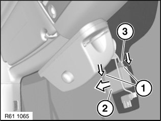

Ambient Light Sensor: Service and Repair
61 35 177 Removing And Installing (Replacing) Rain/Light Sensor

IMPORTANT: Read and comply with notes on protection against electrostatic damage (ESD protection).

Necessary preliminary tasks:
Version with Autobeam:
- Remove interior rear-view mirror

Detach two-part mirror base cover (1) by pressing from below.
Feed out two-part mirror base cover (1) and remove.
NOTE: Catches of two-part mirror base cover (1) must not be damaged or missing.

Disconnect plug connection (3).
Release locks (1) in direction of arrow and remove rain/light sensor (2) from optical element.
Installation note:
Do not damage optical element covered by rain/light sensor (2).
Initialize rain/light sensor.